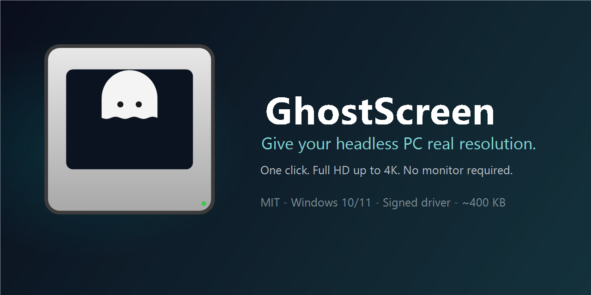

GhostScreen 95

Tu PC headless acaba de recibir un monitor. Uno fantasma. En 4K.
Un único EXE · Sin instaladores · Sin internet · Windows 10/11 x64
El problema
Tu máquina es una caja headless: un servidor en un rack, un portátil con la pantalla rota, una estación de trabajo a la que llegas por RDP o Chrome Remote Desktop. Sin monitor físico — así que Windows te da ningún monitor.
- Las sesiones remotas se quedan en un borroso 800x600 (o peor)
- Las apps que sabes que son a pantalla completa muestran una pequeña ventana centrada
- Juegos, herramientas de diseño y reproductores se niegan a renderizar bien
- El escalado de la interfaz hace que todo parezca una hoja de cálculo de 1993
No puedes comprar un monitor para una máquina que nunca mirarás. Entonces, ¿qué haces?
La solución
GhostScreen 95 instala una pantalla virtual — un monitor que solo existe en el software — y ajusta la resolución que tú eliges:
| 2560x1440 | recomendada |
| 1920x1080 | Full HD |
| 1366x768 | estándar portátil |
| 1280x720 | HD ready |
…todas a 60 Hz (el controlador admite hasta 4K). El sistema operativo cree que hay un precioso monitor conectado. Los clientes remotos renderizan sesiones widescreen Full HD. Tu PC headless se comporta como un escritorio normal — porque, para Windows, lo es.
"Una pantalla fantasma. Está. No está. Nadie lo sabe. Windows la adora."
Qué obtienes
- Un solo EXE, todo dentro — controlador, catálogo, ajustes, herramientas. Sin instalador, sin restos.
- Alma de Windows 95 — una interfaz fiel a la era del '95. Barra de título degradada, botones cincelados, MS Sans Serif.
- Auto-reparación — detecta controladores ausentes u obsoletos, reinstala, reinicia la pantalla, reintenta. Funciona tras un formateo.
- Cero internet — todo funciona offline, desde el EXE.
- Re-ejecutable — ¿Formateaste? Ejecútalo de nuevo. Es idempotente.
- 7 idiomas — italiano, español, français, deutsch, english, 中文, 日本語, detectados automáticamente.
- Música Game Boy — una chiptune suena mientras ocurre la magia. Silénciala en Archivo ▾.
Para quién es
- Servidores headless gestionados por RDP — resolución real, productividad real
- Portátiles con pantalla rota — la máquina no está muerta, solo necesita un panel fantasma
- HTPC conectados a una TV que suele estar apagada — escritorio siempre en orden
- Laboratorios CI/CD y de pruebas — pantallas virtuales estables para automatización UI
- Trabajo remoto vía Chrome Remote Desktop / AnyDesk / TeamViewer — widescreen nítido
- Granjas GPU y rigs de minería — el dummy plug de software
Seis historias completas: docs/CASE-STUDIES.md
Inicio rápido
1. Descarga el EXE · 2. Clic derecho → Ejecutar como administrador ·
3. Elige la resolución · 4. Pulsa Instalar y Aplicar · Hecho. 🎩
Requiere Windows 10/11 x64 y el .NET Framework 4.x integrado (preinstalado). Licencia MIT.
Créditos
GhostScreen 95 está creado por Luigi Strazzullo para Culture Digitali Srl — con la honestidad de los 90 que todos merecemos.
Controlador de pantalla virtual: MikeTheTech / Virtual-Display-Driver (MIT) ·
devcon.exe: Microsoft Windows Driver Kit · Todo lo demás: trabajo original.
Licencia: MIT · Changelog: CHANGELOG.md · Visión del producto: PRODUCT.md · Código: GitHub
"Il monitor non c'è, ma la risoluzione sì."